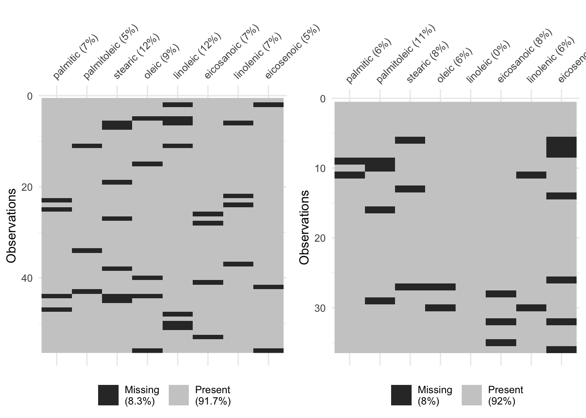

Mini Project 1
Introduction
This analysis attempts to answer questions about fatty acids in olives found in two different regions. The data includes response variables palmitic, palmitoleic, stearic, oleic, linoleic, eicosanoic, linolenic, and eicosenoic acids predicted by region (Region 2 and Region 4).
This report assesses whether the olive samples from each region deviate from their historical averages and whether the two regions deviate from each other. We also explore whether linoleic and linolenic acids can be dropped from the list of fatty acids without significantly decreasing the separation of the two samples.
The data analyzed contains several missing values. Part of this report determines whether the data is missing at random and provides a new dataset with imputed values using the Expectation-Maximization (EM) algorithm and multiple imputation.
We will show that the olive samples from both regions deviate significantly from their historical averages and that the two regions differ significantly from each other in terms of their fatty acid profiles.
Data Preparation
The data for regions 2 and 4 were obtained from separate organizations, which may have used different data collection procedures. Both datasets contain missing values in various fatty acid measurements. In order to perform a comprehensive multivariate analysis, these missing values need to be addressed. It is assumed prior to this analysis that the data from both regions are distributed multivariate normal.
Under the assumption that the data is missing at random (MAR), we employed the Expectation-Maximization (EM) algorithm combined with multiple imputation to fill in the missing values. Expectation-Maximization is an iterative method that estimates the parameters of a statistical model in the presence of missing data. The algorithm alternates between estimating the missing values given the observed data (E-step) and updating the model parameters based on the complete data (M-step). This process continues until convergence. The algorithm can be summarized as follows:
\[ \text{E-step: } Q(\theta | \theta^{(t)}) = E[\log L(\theta; X_{obs}, X_{mis}) | X_{obs}, \theta^{(t)}] \]
After convergence, multiple imputation is performed by generating several complete datasets, each with different imputed values drawn from the estimated distribution of the missing data. This approach accounts for the uncertainty associated with the imputation process. This is done by adding a random error term to each imputed value based on the estimated covariance structure of the data.
Assessment of Missing at Random (MAR) Assumption
In order to use the EM algorithm and multiple imputation correctly, we must first assess whether the missing data mechanism is consistent with the Missing at Random (MAR) assumption. MAR assumes that the probability of missingness is related to the observed data but not to the unobserved data. To test this assumption, we examineed the patterns of missingness in the datasets for region 2 and region 4 visually and statistically with fisher’s exact p-values.
An initial look at the missing data patterns for both regions indicates that the missingness does not appear to be systematically related to any particular variable. The visualizations show that missing values are scattered throughout the datasets without any obvious patterns.
To assess the MAR assumption more formally, we conducted pairwise Fisher’s exact tests between the missingness indicators of each pair of variables. Fishers exact tests use contingency tables to determine if there are nonrandom associations between two categorical variables. In this case, we created 2x2 tables for each pair of variables, where one variable indicates whether a value is missing (1) or observed (0) for the dependent variable, and the other variable indicates the same for the predictor variable. The null hypothesis for each test is that the missingness of the dependent variable is independent of the missingness of the predictor variable.
The resulting p-values for each unique pair of variables (shown in the appendix) were all above common significance thresholds (e.g., 0.05), suggesting that there is no strong evidence to reject the MAR assumption. Based on these findings, we proceed under the assumption that the data is missing at random (MAR), allowing us to utilize the EM algorithm and multiple imputation for handling missing values in our multivariate analyses.
Analysis for Region 2
For Region 2, the sample mean vector was compared to the historical average \[ \boldsymbol{\mu}_{02} = (1300,\ 120,\ 265,\ 7310,\ 820,\ 45,\ 65,\ 28), \]
representing the eight fatty acids (palmitic, palmitoleic, stearic, oleic, linoleic, eicosanoic, linolenic, and eicosenoic). Using the EM algorithm followed by multiple imputation to address missing data, a multivariate hypothesis test was performed. For each imputed dataset, the sample mean vector and within-imputation covariance matrix were computed. These results were then combined using Rubin’s rules to form the following: \[ \bar{\boldsymbol{\theta}} = \frac{1}{M} \sum_{m=1}^{M} \boldsymbol{\theta}_m, \quad \mathbf{U}_{\text{bar}} = \frac{1}{M} \sum_{m=1}^{M} \mathbf{U}_m, \quad \mathbf{B} = \frac{1}{M-1} \sum_{m=1}^{M} (\boldsymbol{\theta}_m - \bar{\boldsymbol{\theta}})(\boldsymbol{\theta}_m - \bar{\boldsymbol{\theta}})^\top. \]
The total covariance matrix, incorporating both within- and between-imputation variability, was then \[ \mathbf{T} = \mathbf{U}_{\text{bar}} + \left(1 + \frac{1}{M}\right)\mathbf{B}. \]
Using \(\bar{\boldsymbol{\theta}}\) and \(\mathbf{T}\), a pooled Hotelling’s \(T^2\) statistic was computed as \[ T^2 = n(\bar{\boldsymbol{\theta}} - \boldsymbol{\mu}_0)^\top \mathbf{T}^{-1} (\bar{\boldsymbol{\theta}} - \boldsymbol{\mu}_0), \]
which follows an approximate \(F\)-distribution under the null hypothesis \(\mathcal{H}_0: \boldsymbol{\mu} = \boldsymbol{\mu}_0\). For Region~2, this test produced \[ T^2 = 511.44, \quad F = 55.79, \quad p < 0.001. \]
The extremely small (p)-value provides strong evidence that the Region~2 sample mean vector significantly deviates from its historical average. The pooled mean estimates after combining across imputations were \[ \bar{\boldsymbol{\theta}} = (1299.87,\ 121.42,\ 264.44,\ 7310.76,\ 817.79,\ 45.72,\ 63.63,\ 28.40). \]
Examination of the sample means relative to the hypothesized values suggests that most components are close to their historical levels, but small shifts across several variables collectively contribute to the multivariate difference. In particular, and exhibit the largest deviations, consistent with their large variances and strong negative covariance pattern, suggesting systematic changes in fatty-acid composition for Region~2.
Analysis for Region 4
For Region~4, the sample mean vector was compared to the historical average \[ \boldsymbol{\mu}_{04} = (1230,\ 105,\ 275,\ 7360,\ 830,\ 41,\ 75,\ 38), \]
using the same EM–multiple-imputation procedure described above. The resulting combined multivariate test yielded \[ T^2 = 495.93, \quad F = 49.59, \quad p < 0.001. \]
The test again provides overwhelming evidence that the Region~4 fatty-acid profile differs significantly from its historical mean vector. The pooled mean estimates \[ \bar{\boldsymbol{\theta}} = (1230.03,\ 105.36,\ 273.61,\ 7358.55,\ 834.72,\ 42.36,\ 75.83,\ 37.69) \] are remarkably close to the hypothesized values, indicating that while the overall multivariate deviation is statistically significant, the practical differences are small in magnitude.
Comparison between Regions 2 and 4
To compare whether Regions 2 and 4 are the same, we used Hotelling’s 2-Sample T test. We calculated a \(T^2\) value of 189.7534332 which converts to an F-Statistic of 21.8743541. Using the F distribution with numerator degrees of freedom of 8 and a denominator degrees of freedom of 83 results in a P-Value of <.0001.
This is statistically significant and provides overwhelming evidence that the overall fatty-acid profiles of regions 2 and 4 differ. The agronomist’s belief that region 2 and region 4 olives have evolved to have essentially the same profile in terms of the eight fatty acids is not supported by the data. The observed differences are unlikely to have come from random sampling variation alone.
It is important to note that the two samples were drawn by different organizations with potentially different data collection procedures, chemical analysis tools, and data censoring mechanisms. This combined with missing data that was imputed using MVI exposes limitations of this analysis. We do not know if significant variation comes from the different data collection procedures.
Variable Coefficient
1 palmitic -0.07663898
2 palmitoleic -0.12250415
3 stearic -0.18522911
4 oleic -0.10728903
5 linoleic -0.11471857
6 eicosanoic 0.51834314
7 linolenic -0.74245026
8 eicosenoic -0.31658504Looking at the discriminant function, we can see that the largest coefficients are for Linolenic, Eicosanoic, and Eicosenoic acids (in that order). This suggests that these fatty acids contribute the most to the difference between regions 2 and 4. Further investigation into these specific fatty acids may provide more insights into the differences in olive profiles between the two regions.
Assessment of Linoleic and Linolenic Acids
[,1]
palmitic 0.04397878
palmitoleic 0.07029822
stearic 0.10629253
oleic 0.06156712
linoleic 0.06583051
eicosanoic -0.29744787
linolenic 0.42605030
eicosenoic 0.18167029 [,1]
palmitic 5.339851
palmitoleic 2.453354
stearic 4.319048
oleic 14.405667
linoleic 7.832097
eicosanoic -1.765838
linolenic 3.781679
eicosenoic 1.241544Using a conditional Wilk’s \(\Lambda\) test, we assessed whether linoleic acid and linolenic acid were important in contributing to the significant difference observed between regions 2 and 4. We set up the following hypothesis:
CHECK THESE HYPOTHESES \[ H_0: \boldsymbol{\mu}^{(full)} = \boldsymbol{\mu}^{(reduced)} \] \[ H_a: \boldsymbol{\mu}^{(full)} \ne \boldsymbol{\mu}^{(reduced)} \] Where the full model includes all 8 fatty acids and the reduced model excludes linoleic and linolenic acids.
With a Wilk’s \(\Lambda\) of 0.5948317 converted to an F statistic, we calculated a P-value of < .05 and reject the null hypothesis. To support this rejection, we found that the discriminant functions separating regions also indicate some form of separation for linoleic and linolenic acids. In this case, we see that the standardized discriminant scores for each of them have high positive influence indicating that observations with higher values of linoleic and linolenic acids more likely reside in Region 2.
We conclude that linoleic and linoeic acids are important in contributing to the separation of the two regions beyond the information available from the other 6 acids.
Conclusions and Recommendations
The missing data appeared consistent with the MAR assumption, supporting the use of the EM algorithm followed by multiple imputation to generate valid inferences. For Region~2, the pooled Hotelling’s \(T^2 = 511.44\) (\(F = 55.79\), \(p < 0.001\)) provided strong evidence that the sample mean vector differed from its historical average. The estimated means \((1299.87,\ 121.42,\ 264.44,\ 7310.76,\ 817.79,\ 45.72,\ 63.63,\ 28.40)\) suggest that although most fatty acids were near their expected values, coordinated shifts—especially in oleic and linoleic acids—produced a significant overall difference.
Similarly, Region~4 showed \(T^2 = 495.93\) (\(F = 49.59\), \(p < 0.001\)), with estimated means \((1230.03,\ 105.36,\ 273.61,\ 7358.55,\ 834.72,\ 42.36,\ 75.83,\ 37.69)\). The deviations, though modest for individual components, combined to indicate a multivariate shift in fatty acid composition relative to historical levels.
The multivariate analysis comparing regions 2 and 4 revealed strong evidence that the fatty acid profiles differ between the two regions. Specifically, Hotelling’s two-sample \(T^2\) test indicated a statistically significant difference leading us to reject the null hypothesis of equal mean vectors. This suggests that olives from regions 2 and 4 possess distinct chemical compositions in terms of their fatty acid content.
To further understand which variables contributed most to this separation, a discriminant function was constructed. The resulting discriminant coefficients indicated that linolenic, eicosanoic, and eicosenoic acids were the strongest contributors to the separation of regions.
In addition, our assessment of linoleic and linolenic acids confirmed their importance in contributing to the observed differences.
Limitations: Limitations of this analysis include the fact that we do not know any bias that may come from collection techniques between two different organizations. Also, missing data adds unknowns to the analysis.
Future Work: Further investigation into specific fatty acids like linolenic, eicosanoic, and eicosenoic acids may provide more insights into the differences in olive profiles between the two regions. Additionally, looking at other regions (e.g. 1 and 3) could provide additional information on regional differences. Finally, it would be helpful to look into the source of the missingness in the data.
Appendix
pairwise_missing_fisher_p_values(oliver2a) palmitic palmitoleic stearic oleic linoleic eicosanoic linolenic
palmitic NA 1.0000 0.4231 0.3196 1.0000 1 1.0000
palmitoleic 1.0000 NA 1.0000 1.0000 0.3354 1 1.0000
stearic 0.4231 1.0000 NA 0.5008 1.0000 1 0.4231
oleic 0.3196 1.0000 0.5008 NA 0.5008 1 1.0000
linoleic 1.0000 0.3354 1.0000 0.5008 NA 1 0.4231
eicosanoic 1.0000 1.0000 1.0000 1.0000 1.0000 NA 1.0000
linolenic 1.0000 1.0000 0.4231 1.0000 0.4231 1 NA
eicosenoic 1.0000 1.0000 1.0000 0.2487 0.3354 1 1.0000
eicosenoic
palmitic 1.0000
palmitoleic 1.0000
stearic 1.0000
oleic 0.2487
linoleic 0.3354
eicosanoic 1.0000
linolenic 1.0000
eicosenoic NApairwise_missing_fisher_p_values(oliver4a) palmitic palmitoleic stearic oleic eicosanoic linolenic eicosenoic
palmitic NA 0.2127 1.0000 1.0000 1.0000 0.1095 1.0000
palmitoleic 0.2127 NA 1.0000 1.0000 1.0000 1.0000 0.5658
stearic 1.0000 1.0000 NA 0.1619 1.0000 1.0000 0.4882
oleic 1.0000 1.0000 0.1619 NA 1.0000 0.1095 1.0000
eicosanoic 1.0000 1.0000 1.0000 1.0000 NA 1.0000 0.4882
linolenic 0.1095 1.0000 1.0000 0.1095 1.0000 NA 1.0000
eicosenoic 1.0000 0.5658 0.4882 1.0000 0.4882 1.0000 NAhotellings_with_imputed_datasets(oliver2a_imputed, mu2a_not)$mean
palmitic palmitoleic stearic oleic linoleic eicosanoic
1300.02666 121.55065 264.82944 7310.35049 817.53657 45.70692
linolenic eicosenoic
63.63897 28.37903
$total_variance
palmitic palmitoleic stearic oleic linoleic
palmitic 76.1460124 3.26169424 -0.1960183 -110.4801670 28.925059
palmitoleic 3.2616942 7.71283894 -4.8151915 -0.8884995 -5.737627
stearic -0.1960183 -4.81519147 22.9219679 -19.8672490 2.611018
oleic -110.4801670 -0.88849946 -19.8672490 305.3902027 -162.181911
linoleic 28.9250586 -5.73762732 2.6110180 -162.1819109 132.880188
eicosanoic -0.3371863 -0.48708231 0.2826208 -3.0297112 2.359713
linolenic 1.1876257 0.07953149 -0.9308758 -4.6178296 2.593592
eicosenoic -0.5828057 -0.18754592 0.2372885 -2.8725421 2.477560
eicosanoic linolenic eicosenoic
palmitic -0.3371863 1.18762571 -0.5828057
palmitoleic -0.4870823 0.07953149 -0.1875459
stearic 0.2826208 -0.93087579 0.2372885
oleic -3.0297112 -4.61782958 -2.8725421
linoleic 2.3597134 2.59359158 2.4775599
eicosanoic 0.8088437 0.28332300 0.2558584
linolenic 0.2833230 0.85668128 0.2707236
eicosenoic 0.2558584 0.27072363 0.7697296
$T2
[1] 410.2791
$F_stat
[1] 44.75772
$p_value
[1] 0hotellings_with_imputed_datasets(oliver4a_imputed, mu4a_not)$mean
palmitic palmitoleic stearic oleic linoleic eicosanoic
1229.97124 104.74076 273.87754 7358.23320 834.72222 42.36076
linolenic eicosenoic
75.82303 37.58241
$total_variance
palmitic palmitoleic stearic oleic linoleic
palmitic 881.04944 211.533230 -84.4801680 -1509.494482 425.158361
palmitoleic 211.53323 69.443122 -31.0800601 -391.763825 115.883789
stearic -84.48017 -31.080060 65.0287588 165.377858 -111.344753
oleic -1509.49448 -391.763825 165.3778584 3165.590307 -1207.630807
linoleic 425.15836 115.883789 -111.3447527 -1207.630807 694.083510
eicosanoic -11.37045 -4.006876 5.1437627 17.787547 -7.809026
linolenic 35.34217 9.563360 -6.6753262 -71.170247 26.181809
eicosenoic -12.44380 -2.184126 -0.2767111 8.685111 2.707712
eicosanoic linolenic eicosenoic
palmitic -11.3704519 35.3421679 -12.4437983
palmitoleic -4.0068757 9.5633598 -2.1841264
stearic 5.1437627 -6.6753262 -0.2767111
oleic 17.7875473 -71.1702467 8.6851109
linoleic -7.8090259 26.1818091 2.7077119
eicosanoic 0.6654318 -0.4036164 0.2261096
linolenic -0.4036164 3.5007055 0.3531085
eicosenoic 0.2261096 0.3531085 1.5917237
$T2
[1] 495.2962
$F_stat
[1] 49.52962
$p_value
[1] 0Comparison between Regions 2 and 4
cat("Hotelling's T^2 Statistic:", as.numeric(t_squared), "\n") # 189.7534Hotelling's T^2 Statistic: 189.7534 cat("F-statistic:", as.numeric(f_statistic), "\n") # 21.87435F-statistic: 21.87435 cat("Numerator degrees of freedom:", df1, "\n")Numerator degrees of freedom: 2 cat("Denominator degrees of freedom:", df2, "\n")Denominator degrees of freedom: 83 cat("P-value:", as.numeric(p_value), "\n")P-value: 0 Assessment of Linoleic and Linolenic Acids
paste("F-stat for region effect:", Fs)[1] "F-stat for region effect: 28.2676278919727"paste("df1:", df1, "df2:", df2)[1] "df1: 2 df2: 83"paste("P-value:", 1-pf(Fs, df1, df2))[1] "P-value: 4.33867164417734e-10"